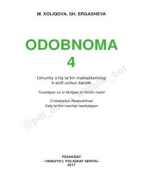

O44-sinf o'quvchilari uchun odob-axloq qoidalari va vatanparvarlikka oid darslik.
Ushbu darslik umumiy o'rta ta'lim maktablarining 4-sinf o'quvchilari uchun mo'ljallangan bo'lib, odob-axloq qoidalari va vatanparvarlik tuyg'ularini shakllantirishga qaratilgan. Kitobda o'quvchilarning ma'naviy dunyoqarashini boyituvchi hikmatlar, hadislar va mustaqillik yillaridagi yutuqlar haqida ma'lumotlar keltirilgan.